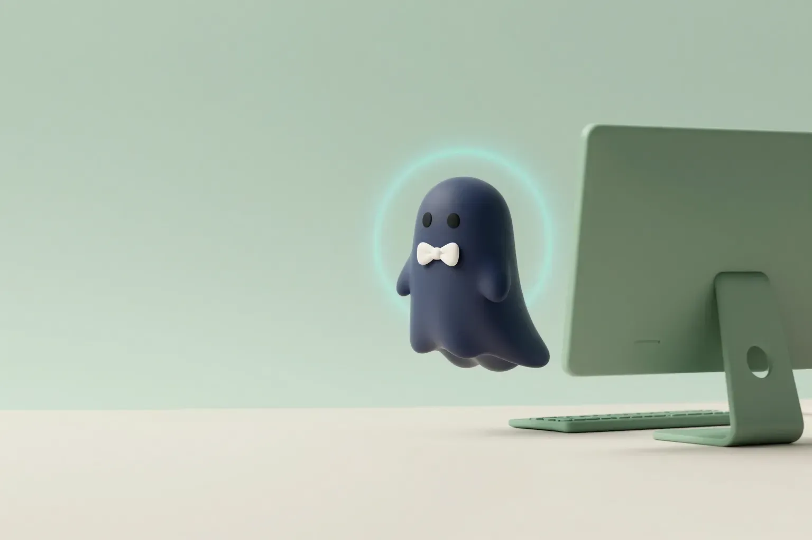
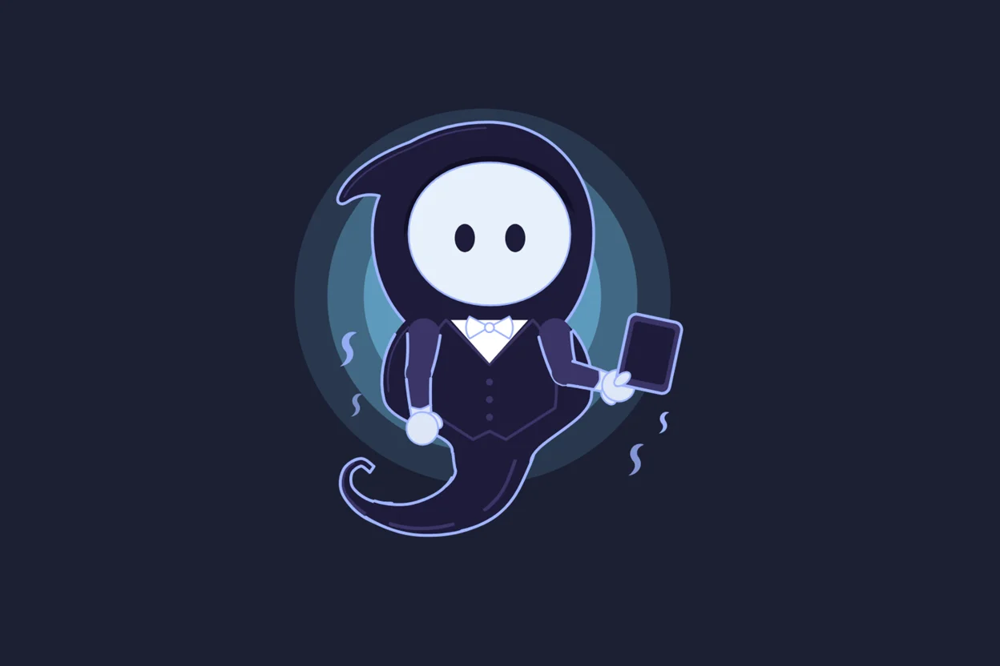
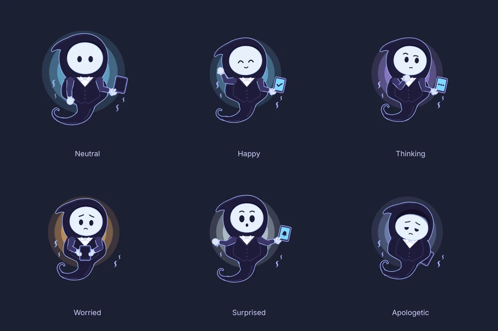

Wimble
A private AI assistant that lives on your desktop, thinks with Claude, and touches nothing without asking first.
- Status
- Personal beta · v0.3
- Platform
- Windows 11
- Role
- Solo — product, design, build
- Year
- 2026

What it is
A tiny ghost butler for your Windows PC.
Wimble is a private AI assistant for Windows 11 that lives on your desktop as a small animated ghost butler: hood, pale mask, bow tie, a tablet, and a smoky tail where the legs should be.
It thinks with Claude, remembers only what you approve, and can work with your files, apps, clipboard and reminders. Every change waits for your Allow and lands in an audit log. Deleted things go to the Recycle Bin, never into the void.
When a job takes a while, Wimble drifts off the edge of the screen to see to it and floats back with the answer. Its manners are adjustable, from composed butler to nervous little ghost.
Features
What it does.
Always on the desktop
A transparent, always-on-top mascot. Ctrl+Alt+W opens the chat; clicks anywhere else pass straight through to your apps.
Asks before it acts
Files, apps, clipboard, reminders and app updates, each behind an Allow or Deny dialog and written to an audit log.
Remembers what you allow
It keeps only the facts you approve. Forget one and it is actually gone, not just hidden.
Text helper
Select any text and press Ctrl+Alt+T to polish, shorten, translate or reply, without leaving the app you're in.
Adjustable personality
Humour, bluntness, fussiness, formality and more, with presets from Butler to Classic Wimble.
Spend-capped
A monthly cap (₹1,500 by default) with a warning at 80%. Most chats cost about a paisa.


Built with
- Tauri 2
- Rust
- React
- TypeScript
- Claude API
- Rive
- SQLite